وجدت وصفة؟ شاركها.
من تيك توك أو إنستغرام أو يوتيوب أو أي موقع، شارك الوصفة إلى وصفاتي.
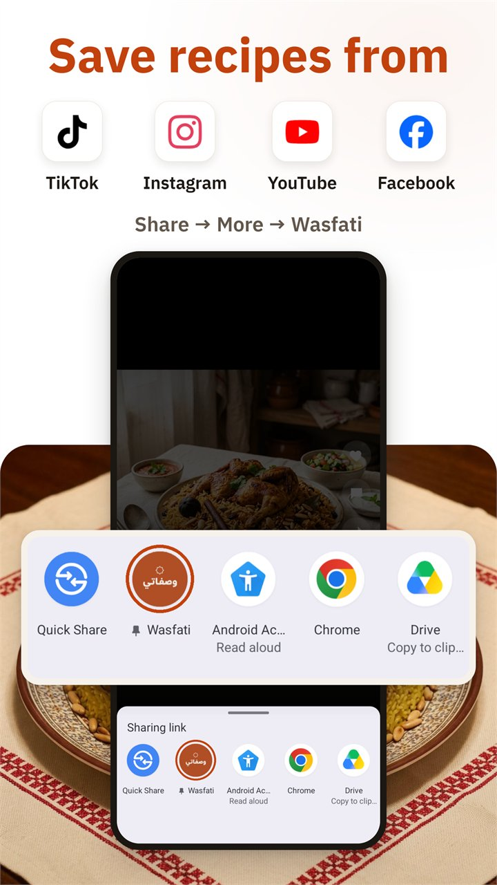
من أول «احفظ» إلى آخر لقمة
احفظ أي وصفة، واطبخ وخطّط وتسوّق من مكان واحد.
شارك رابط الوصفة من تطبيقك المفضّل؛ مقاديرها وخطواتها صارت جاهزة للطبخ.
قريبًا على App Store
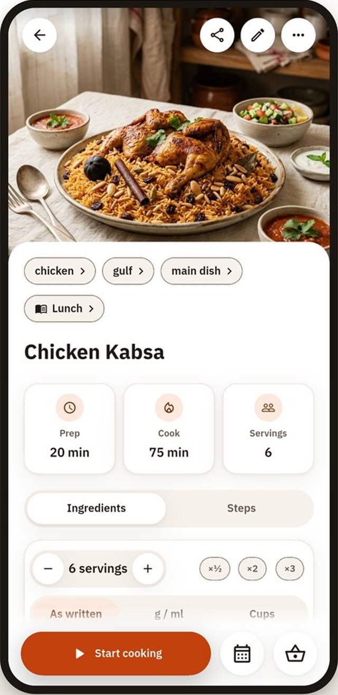
مقادير، خطوات، وبالعربي.شاهدتها وأعجبتك؟ احفظها من
من مطبخنا، بإلهامك
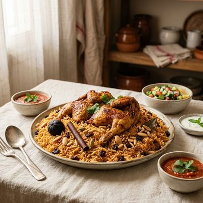
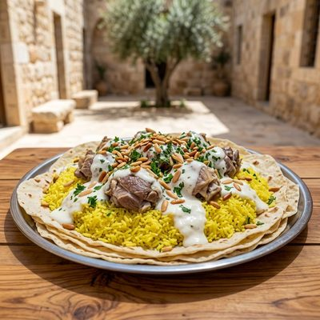
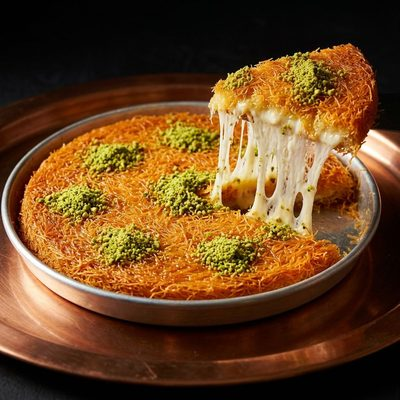
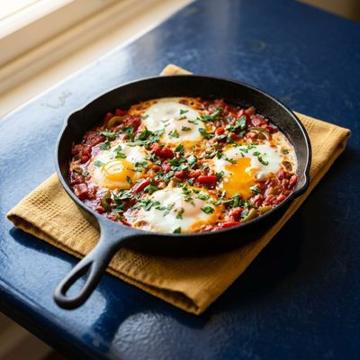
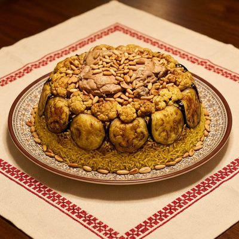
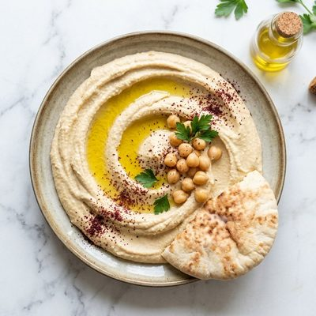
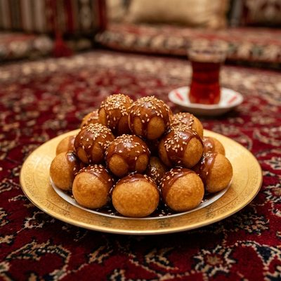
وصفة تعجبك. والباقي أسهل.
بدل التنقّل بين الروابط والملاحظات، اجمع رحلتك مع الوصفة في مكان واحد.
من تيك توك أو إنستغرام أو يوتيوب أو أي موقع، شارك الوصفة إلى وصفاتي.

وصفة عربية مرتّبة بالمقادير والدرجات والخطوات، لتنتقل من القراءة إلى الطبخ.
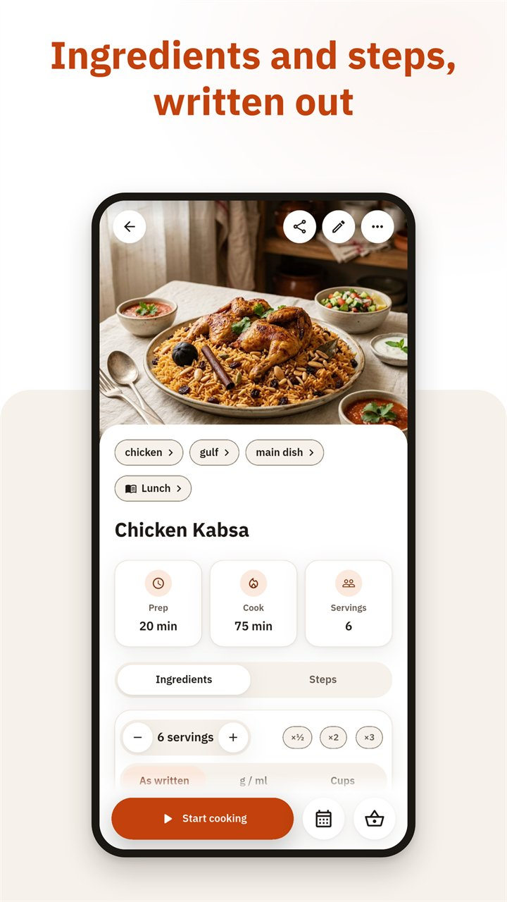
خطّط وجبات أسبوعك، ثم أضف المقادير إلى قائمة المشتريات لتكون جاهزًا للطبخ.
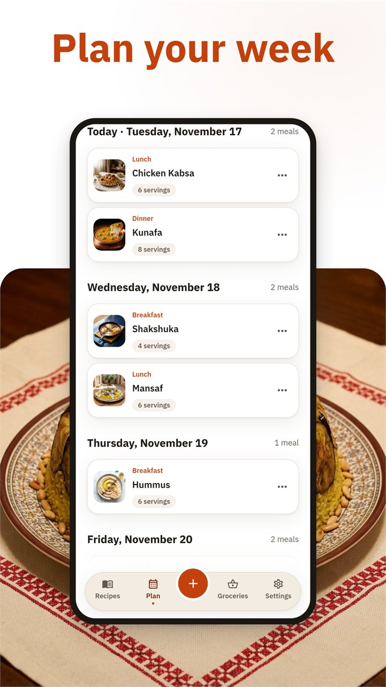
من أول وصفة تحفظها، إلى قائمة الأسبوع المقبل.
تفضّل، ألقِ نظرة
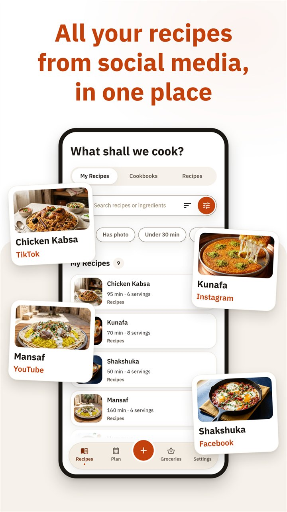
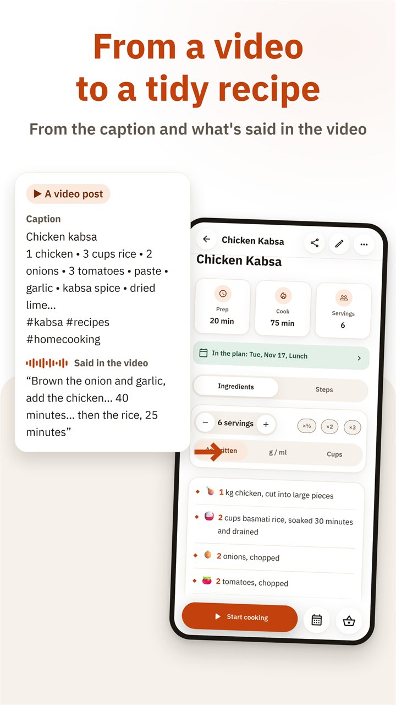
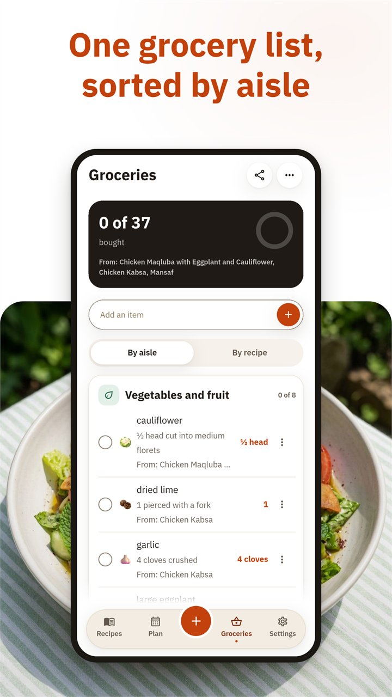
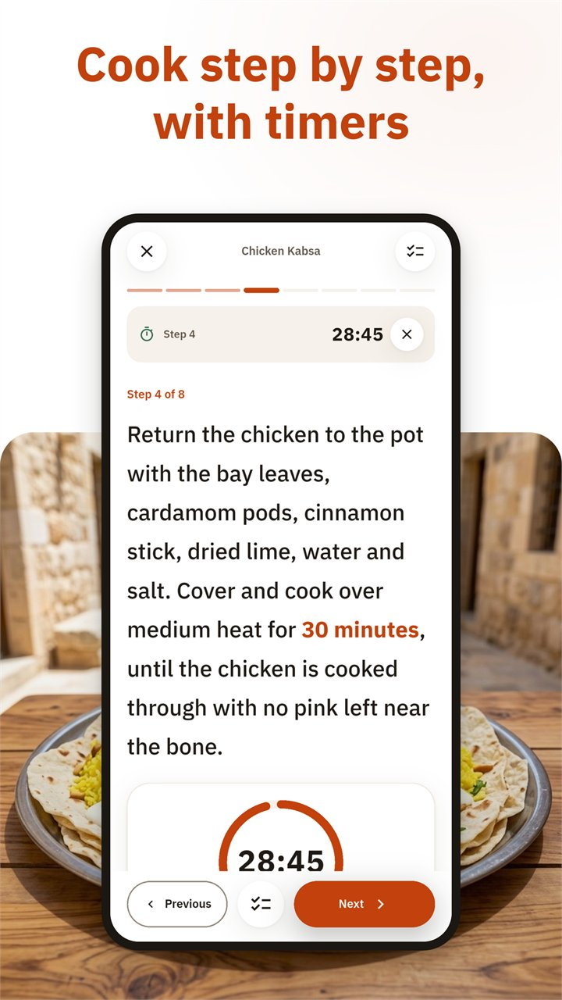
اسحب لمشاهدة اللقطات السبع، أو استخدم الأسهم. بلوحة المفاتيح: ركّز على المعرض واستخدم مفتاحَي السهم.
نظرة أقرب
من Oasis Forge، إلى مطبخك
تطبيق وصفات من Oasis Forge، يجمع الحفظ والطبخ والتخطيط والتسوّق.
تعرّف على Oasis Forgeلديك سؤال أو مشكلة أو اقتراح؟ يمكنك مراسلتنا مباشرة عبر البريد الإلكتروني.
الدعم والملاحظاتوصفة اليوم… بداية الحكاية
مكان واحد لوصفاتك، وخطّة وجباتك، وقائمة مشترياتك.
لأي سؤال أو مشكلة أو اقتراح، راسلنا وسنرد عليك: